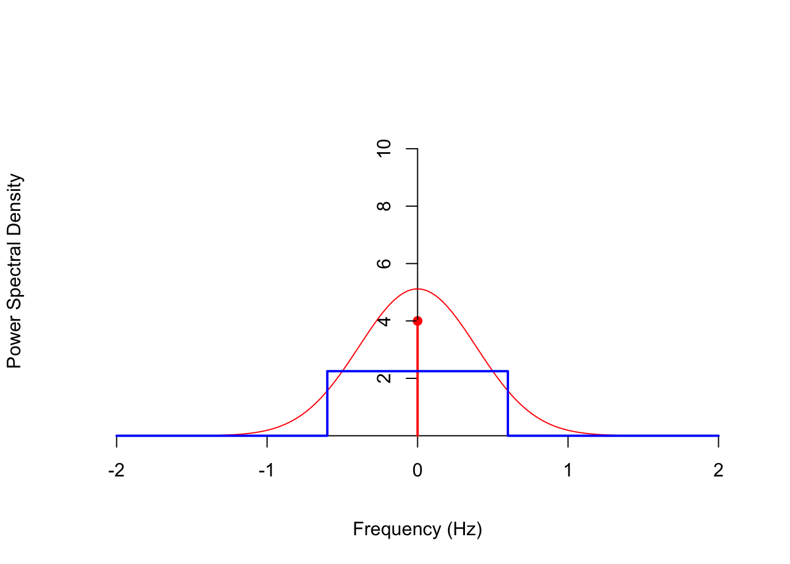
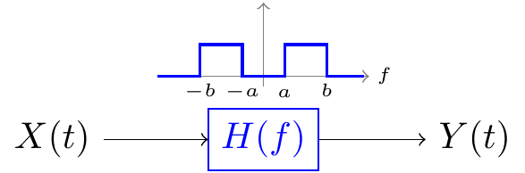

Lesson 58 LTI Filters in the Frequency Domain
Motivation
In Lesson 57, we studied what LTI filters do to stationary signals in the time domain. However, it is usually easier to analyze and understand LTI filters in the frequency domain, as we explore in this lesson.
Theory
Proof. Theorem 57.2 provides the mean and autocovariance functions of \(\{ Y(t) \}\). We can use these to obtain the autocorrelation function of \(\{ Y(t) \}\): \[\begin{align*} R_Y(\tau) &= C_Y(\tau) + \mu_Y^2 \\ &= (h(-t) * h * C_X)(\tau) + \left(\mu_X \int_{-\infty}^\infty h(t)\,dt\right)^2 \\ &= (h(-t) * h * C_X)(\tau) + (h(-t) * h * \mu_X^2) \\ &= (h(-t) * h * R_X)(\tau). \end{align*}\] The second-to-last equality follows from the fact that the convolution of any function with a constant function (\(\mu_X^2\)) is itself a constant function. So \(h * \mu_X^2\) is the constant \(\int_{-\infty}^\infty h(t)\,dt \mu_X^2\), and convolving this constant function with \(h(-t)\) gives another factor of \(\int_{-\infty}^\infty h(t)\,dt\).
Now, we know that \(S_Y\), the power spectral density of \(\{ Y(t) \}\), is just the Fourier transform of the autocorrelation function \(R_Y\). Combining the representation of \(R_Y\) above, with the Fourier properties from Appendix D.3, we obtain: \[\begin{align*} S_Y(f) &= \mathscr{F}[R_Y](f) \\ &= \mathscr{F}[h(-t) * h * R_X](f) \\ &= \mathscr{F}[h(-t)](f) \cdot \mathscr{F}[h](f) \cdot \mathscr{F}[R_X](f) & \text{(convolution property)} \\ &= H(-f) \cdot H(f) \cdot S_Y(f) & \text{(definitions of $H$ and $S_Y$, reversal property)} \\ &= H^*(f) \cdot H(f) \cdot S_X(f) & \text{($h$ is real, so $H$ is conjugate symmetric)} \\ &= |H(f)|^2 \cdot S_X(f), \end{align*}\] as we wanted to show.Example 58.1 (White Noise) Consider the white noise process \(\{ Z[n] \}\) defined in Example 47.2, which consists of i.i.d. random variables with mean \(\mu = E[Z[n]]\) and variance \(\sigma^2 \overset{\text{def}}{=} \text{Var}[Z[n]]\).
We showed in Example 56.1 that its PSD is \[ S_Z(f) = \sigma^2 + \mu^2 \delta(f). \]
Let’s pass \(\{ Z[n] \}\) through a filter with impulse response \[ h[n] = (-0.4)^n u[n]. \] What is the PSD of the output \(\{ Y[n] \}\)?
By the Filter Theorem (Theorem 58.1), we know that \[ S_Y(f) = |H(f)|^2 \cdot S_Z(f). \] So all we need to do is find \(|H(f)|^2\).
By Table D.2, the frequency response of the filter is \[ H(f) = \frac{1}{1 + 0.4e^{-j2\pi f}} \] so \[\begin{align*} |H(f)|^2 &= H(f) \cdot H^*(f) \\ &= \frac{1}{1 + 0.4e^{-j2\pi f}} \cdot \frac{1}{1 + 0.4e^{j2\pi f}} \\ &= \frac{1}{1 + 0.4 (e^{j2\pi f} + e^{-j2\pi f}) + (0.4)^2} \\ &= \frac{1}{1.16 + 0.8\cos(2\pi f)}. \end{align*}\]
Now, \(S_Y(f)\) is just the product of this and \(S_Z(f)\). \[\begin{align*} S_Y(f) &= \frac{1}{1.16 + 0.8\cos(2\pi f)} \cdot (\sigma^2 + \mu^2 \delta(f)) \\ &= \frac{\sigma^2}{1.16 + 0.8\cos(2\pi f)} + \frac{\mu^2}{1.16 + 0.8\cos(2\pi \cdot 0)} \delta(f). \end{align*}\] The last equality follows from the fact that \(\delta(f) = 0\) everywhere except \(f=0\), so we can substitute \(f=0\) into the coefficient.
The graphs below show:
- the PSD of the input \(S_Z(f)\) (in red),
- the squared magnitude of the frequency response \(|H(f)|^2\) (in blue), and
- the PSD of the output \(S_Y(f)\) (in orange),

We can calculate the expected power in the output signal \(\{ Y[n] \}\) by integrating the PSD over “all” frequencies. (This is the easiest way, since the autocorrelation function \(R_Y[k]\) is not available.) Because this is a discrete-time signal, we only integrate over frequencies below the Nyquist limit, \(|f| < 0.5\). \[\begin{align*} \int_{-0.5}^{0.5} S_Y(f)\,df &= \int_{-0.5}^{0.5} \frac{\sigma^2}{1.16 + 0.8\cos(2\pi f)} \,df + \int_{-0.5}^{0.5} \frac{\mu^2}{1.96} \delta(f)\,df \\ &\approx 1.1905 \sigma^2 + \frac{\mu^2}{1.96}. \end{align*}\]
Example 58.2 Consider the process \(\{X(t)\}\) from Example 53.5 with autocorrelation function \[ R_X(\tau) = 5 e^{-\tau^2 / 3} + 4. \] We showed in Example 56.2 that its power spectral density is \[\begin{align*} S_X(f) &= 5 \sqrt{\frac{\pi}{3}} e^{-\pi^2 f^2 / 3} + 4 \delta(f) \end{align*}\] Now, suppose we pass \(\{ X(t) \}\) through an LTI filter with impulse response \[ h(t) = 1.8\text{sinc}(1.2f). \] Using the table in Appendix D.1, along with the scaling property, we see that the frequency response is \[ H(f) = 1.8\frac{1}{1.2} \text{rect}(\frac{f}{1.2}) = \begin{cases} 1.5 & |f| < 0.6 \\ 0 & \text{otherwise} \end{cases}. \] The filter \(h\) is a ideal lowpass filter because it perfectly preserves frequencies below \(0.6\) Hz and perfectly removes frequencies above \(0.6\) Hz. It is “ideal” because the impulse response \(h(t)\) is not implementable.
Now, we have to calculate the squared magnitude of the impulse response for the filter theorem: \[ |H(f)|^2 = \begin{cases} 1.5^2 & |f| < 0.6 \\ 0 & \text{otherwise} \end{cases}. \]
\(S_X(f)\) and \(|H(f)|^2\) are graphed below.
By the Filter Theorem (Theorem 58.1), the PSD of the output is \[ S_Y(f) = |H(f)|^2 \cdot S_X(f) = \begin{cases} 1.5^2 \cdot 5 \sqrt{\frac{\pi}{3}} e^{-\pi^2 f^2 / 3} + 1.5^2 \cdot 4 \delta(f) & |f| < 0.6 \\ 0 & \text{otherwise} \end{cases} \] Although the formula for \(S_Y(f)\) is messy, it is quite straightforward to understand what is going on if we just graph it.

Frequencies below 0.6 Hz are passed (with a gain of \(1.5^2 = 2.25\)), while frequencies above 0.6 Hz are rejected completely.
The Filter Theorem allows us to prove a fact about power spectral densities that we have assumed until now.

Proof. To calculate the expected power in a signal \(\{ X(t) \}\) over the frequency band \(a < |f| < b\), we imagine passing \(\{ X(t) \}\) through the ideal bandpass filter \[ H(f) = \begin{cases} 1 & a < |f| < b \\ 0 & \text{otherwise} \end{cases}. \] The output signal \(\{ Y(t) \}\) is then just a version of \(\{ X(t) \}\), with all frequency content outside \(a < |f| < b\) removed.
To obtain the expected power in this frequency band, we integrate the PSD \(S_Y(f)\) of the output over all frequencies.
For continuous-time signals, this looks like
\[ \text{Expected power between $a$ and $b$} = \int_{-\infty}^\infty S_Y(f)\,df. \]
(For discrete-time signals, the limits of the integral are \(-0.5\) and \(0.5\).)
Essential Practice
For these questions, you may want to refer to the power spectral densities that you calculated in Lesson 56.
Radioactive particles hit a Geiger counter according to a Poisson process at a rate of \(\lambda=0.8\) particles per second. Let \(\{ N(t); t \geq 0 \}\) represent this Poisson process.
Define the new process \(\{ D(t); t \geq 3 \}\) by \[ D(t) = N(t) - N(t - 3). \] This process represents the number of particles that hit the Geiger counter in the last 3 seconds.
Suppose \(\{ D(t) \}\) is passed through an LTI filter with impulse response \[ h(t) = 3\text{sinc}(2t). \]
What is the power spectral density of the output? What is the expected power in the output?
Consider the moving average process \(\{ X[n] \}\) of Example 48.2, defined by \[ X[n] = 0.5 Z[n] + 0.5 Z[n-1], \] where \(\{ Z[n] \}\) is a sequence of i.i.d. standard normal random variables.
In Lesson 57, you expressed \(\{ X[n] \}\) as white noise passed through an LTI filter and calculated the impulse response of this filter. Use this impulse response and the PSD of white noise to calculate the PSD of this moving average process. Check that your answer agrees with the one you obtained in Lesson 56.
Let \(\{ X(t) \}\) be a continuous-time random process with mean function \(\mu_X(t) = -1\) and autocovariance function \(C_X(s, t) = 2e^{-|s - t|/3}\).
If \(\{X(t)\}\) is passed through an LTI filter with impulse response \[ h(t) = \begin{cases} 4e^{-2t} & t \geq 0 \\ 0 & \text{otherwise} \end{cases}, \] what is the expected power in the output?